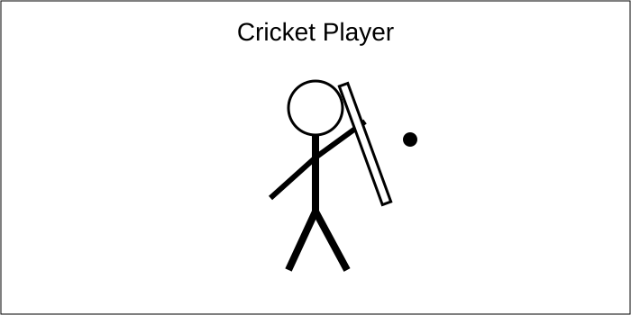

BEHIND THE CLUB
A personal interest.
A chance to build.

Hi, I’m Maulin.
I created this website to share my interest in cricket and give beginners a welcoming place to learn about the game, its history, and the people who play it.
I enjoy the teamwork, concentration, and strategy involved in cricket. This project turns that interest into something visitors can explore at their own pace.
As a Computer Science student at Georgia State University, I am using this project to practice semantic HTML, responsive CSS, JavaScript, database storage, and session-based authentication.
Explore the source ↗